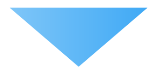

02 新しい視点で映像を制作する

制作年度：３年次
科目：プロジェクト学習
使用スキル：Premiere pro, After Effect
新しい視点で表現をする面白さ
今まで普段見ることの出来ない視点から映像を撮ることで、新たな発見や気づきが得られる。
高校生をターゲットに映像で伝える
新しい視点からの映像で未来大学を紹介することによって、パンフレットなどの紙面では伝えきれない魅力を伝える。
- プロジェクトの仕事
- 目的
- 映像制作のプロセス
- 実際に公開した映像
目的
函館市の舞台として未来大学の魅力を映像化して表現する
高校生向けの大学説明会や公開用Webサイトなどで公開！
パンフレットなどの紙面では伝えきれない部分を映像で伝える！
新しい視点とは何？
新しい視点 = 空からの視点
- パンフレットなどの紙面では伝えきれない事を映像を通して伝えようとする試み
- 空カメラプロジェクトの醍醐味である「空撮」を用いて、今まで見た事のない視点から魅力を発見する事
空撮をする機材
DJI. Phantom
主に、室外の空撮を行うときに使う。GPSと気圧センサーを利用し、高精度なフライト管理を実現。３００Mの高さまでの撮影が可能。
AR.Drone
主に、室内の空撮を行うときに使う。アプリにより、モバイル端末での操縦が可能。phantomに比べると精度や画質は落ちるが、操作が簡単である。
映像制作のサイクル型プロセス
実際に描いた絵コンテ

脚本は、実際に頭で考えたストーリーを絵を描いてイメージを固めることが大事だ。細かいカメラワークや内容設定を固めることができ、効率よく撮影に取りかかることができる。
完成した３つの映像作品を、高校生向けの大学説明会で上映！
３つのテーマをグループで決定！
北海道の多くの高校で上映した、私の監督作品はこちら！